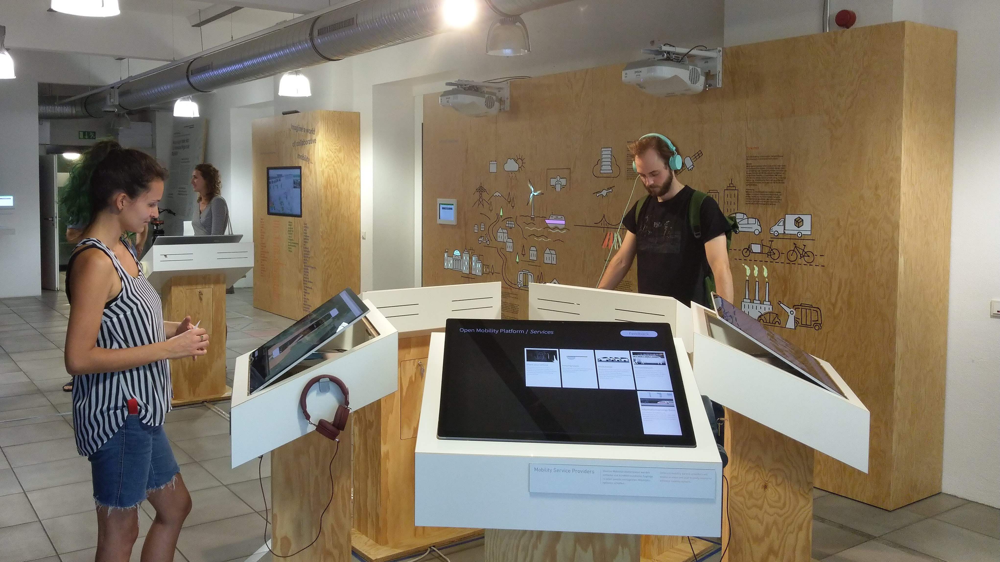

Die Informationen auf Anzeigen erst
einmal auswerten zu müssen, ist bei
Zeitdruck stressig.
Um das Bahnreisen einfacher und personalisierter zu gestalten, wurde ein Leitsystem entwickelt,
welches die Informationen genau dort anzeigt wo sie gebraucht werden.
Das Begleitendes Leitsystem zeigt in Echtzeit die
Informationen an, die zur Entscheidungs- oder
Zurechtfindung benötigt werden. Durch die leicht
verständliche und schnell erfassbare Auskunft
erleichtert es somit die Bahnreise.
Briefing
Anzeigen in Echtzeit, welche auf einen
Blick die Informationen darstellen, die
benötigt werden.
Jan möchte mit der Bahn zu seiner Tante fahren. Mit der Aktivierung seines Zugtickets macht er die
Deutsche Bahn auf seine spontane Reise aufmerksam. Bei großem Andrang kann diese sich auf die Neue
Zahl der Fahrer einstellen und gegebenenfalls weitere Sitzplätze zur Verfügung stellen.
Durch das neue Leitsystem fällt es Jan leicht, sich im Bahnhof zu orientieren.
Die Abfahrtszeiten mit Gleiswechseln und Verspätungen, kann er direkt an der Uhr ablesen. Auch das
Finden des eigenen Sitzplatzes funktioniert durch die Informationsanzeige am Gleis ohne
Schwierigkeiten.
Im Zug werden ihm außerdem die Informationen zu seiner persönlichen Reise direkt am Platz angezeigt.
Jan wird jetzt öfter spontane Reisen unternehmen.
db-leitsystem –
service design, interaction
design
Beitrag auf RAN1 und ist außerdem in InnoZ in Berlin ausgestellt. PDF zur Ausstellung
